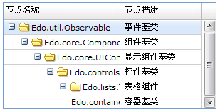
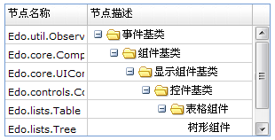
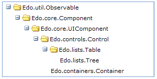
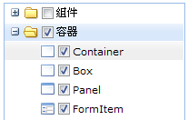
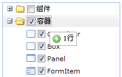

EdoJS的树形组件由两部分组成：
1.树形显示组件：Edo.lists.Tree
2.树形数据组件：Edo.data.Tree
Edo.lists.Tree是可视的树形组件，也是一般意义上的树形。负责界面显示和操作。它是从Edo.lists.Table继承的。
Edo.data.Tree是不可见的数据组件，是一个树状结构的数据组件。它是从Edo.data.Table继承的。
与表格组件一样，树形组件也有两大重要属性：columns和date。
EdoJS的树形组件是从表格组件继承而来的，因此，天然具备表格组件的所有特性。
包括：列配置对象、单元格渲染器、单元格编辑器、恐怖的数据量支持能力和高性能，等等。
EdoJS的树形组件，天然就是TreeGrid组件。
下面我们来演示一个树形的示例，可以看到，与表格示例相比，只是在数据对象的数据结构有所不同，其他方面几乎都是一样的：
var tree = [ { name: 'Edo.util.Observable', desc: '事件基类', icon: 'e-tree-folder', children: [ { name: 'Edo.core.Component', desc: '组件基类', icon: 'e-tree-folder', children: [ { name: 'Edo.core.UIComponent', desc: '显示组件基类', icon: 'e-tree-folder', children: [ { name: 'Edo.controls.Control', desc: '控件基类', icon: 'e-tree-folder', children: [ { name: 'Edo.lists.Table', desc: '表格组件', icon: 'e-tree-folder', children: [ { name: 'Edo.lists.Tree', desc: '树形组件' } ] }, {name: 'Edo.containers.Container', desc: '容器基类'} ] } ] } ] } ] } ]; Edo.build({ id: 'tr', type: 'tree', width: 300, autoColumns: true, height: 150, columns: [ { header: '节点名称', dataIndex: 'name', width: 150}, { header: '节点描述', dataIndex: 'desc', width: 100} ], render: document.body }); var dataTree = new Edo.data.DataTree(tree); tr.set('data', dataTree);
效果图如下：

如上面的树形组件示例，我们通过"children”属性来体现树形数据结构层次，如下：
[
{
name: 'Node1',
children: [
{
name: 'Node2'
}
]
},
{
name: 'Node3'
}
]
Edo.lists.Tree的data属性，是Edo.data.Tree对象。
而Edo.data.Tree是从Edo.data.Table继承的，因此，您可以一样使用表格数据对象的各种数据操作方法，如新增、删除、更改等。
Edo.data.Tree在Edo.data.Table的基础上，增加了一些树形数据结构特有的操作方法，这里不一一赘述，您可以查看Api文档的Edo.data.Tree类。
要了解树形组件的列配置内容，您可以查看表格的columns列配置。
要了解树形组件的渲染器内容，您可以查看表格的renderer单元格渲染器。
要了解树形组件的编辑器内容，您可以查看表格的editor单元格编辑器。
节点列是体验树形层次、具有可折叠图片的列。
如果未指定节点列，默认是第一列。
我们也可以通过以下方式，显示声明节点列：
1.给列对象一个id，比如id为"desc”。
2.在Edo.lists.Tree的配置对象上，设置treeColumn为"desc"。
如下代码所示：
Edo.build({
id: 'tr', type: 'tree', width: 300, autoColumns: true, height: 150,
treeColumn: 'desc',
columns: [
{ header: '节点名称', dataIndex: 'name', width: 100},
{ header: '节点描述', dataIndex: 'desc', width: 200, id: 'desc'}
],
render: document.body
});
效果图如下：

如果客户不需要一个TreeGrid，而想显示一个只有一个节点列的树，该怎么做呢？
我们需要做下面这些事：
1.隐藏表头
2.只有一个列
3.将节点列自适应撑满树形组件的宽度
4.隐藏单元格之间的线条
如下代码所示：
Edo.build({
id: 'tr', type: 'tree', width: 300, height: 150,
headerVisible: false, //隐藏表头
autoColumns: true, //将列宽度撑满组件
horizontalLine: false, //隐藏横线
columns: [
{ dataIndex: 'name'} //只保留一个列配置对象
],
render: document.body
});
效果图如下：

EdoJS的树形组件可以轻易实现：
1.节点选择：效果图

2.节点拖拽：效果图

这里不一一给出实现代码，具体可以查看更多树形组件的示例。